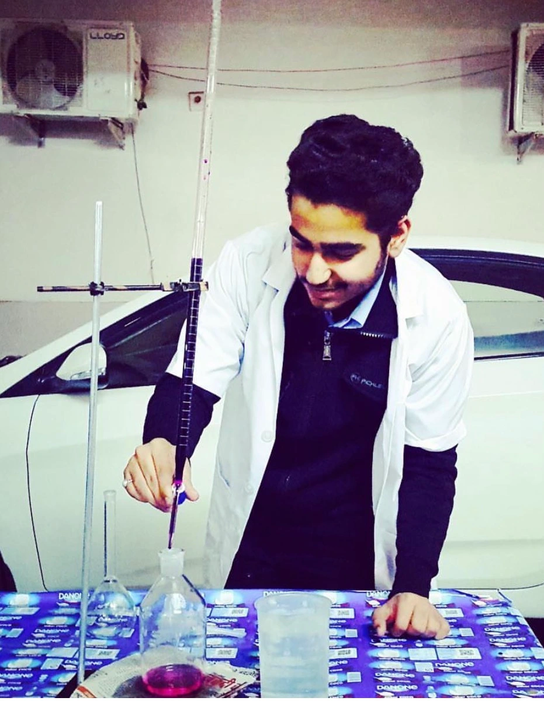

My journey began in the world of medical sciences.
“A doctor heals individuals, but the law can transform society. That belief changed my life.”
My name is Nikhil Chugh, an Advocate, Author, Legal Educator, and Ph.D. Scholar from Panipat, Haryana. My journey from medical science to law has been driven by a simple mission—making justice and legal awareness accessible to every citizen.
Dedicated to legal awareness and access to justice.
In an era where thousands of students dream of becoming doctors, very few choose to walk away from that path after achieving success. My own journey is one such example. I am Nikhil Chugh, an advocate, author, legal educator, and Ph.D. scholar from Panipat, Haryana. My journey from medical science to the legal profession has been driven by a singular mission—making justice accessible to every citizen. Today, I am a member of the Supreme Court Bar Association, an author, and a public legal awareness advocate. However, my journey began in a completely different field.
I was born and raised in Panipat, Haryana. From childhood, I was taught the importance of education, hard work, honesty, and service to society. My family always encouraged me to pursue excellence and contribute positively to the community. As a student, I was curious about many subjects and had a keen interest in understanding how systems and institutions shape people’s lives. This curiosity eventually influenced many of my academic and professional decisions.
Most people know me today as an advocate, but law was not my original career plan. During my school years, particularly Classes XI and XII, I was a science student with medical subjects. Like many students, my initial goal was to enter the medical profession. I dedicated myself to preparing for competitive examinations and successfully qualified the NEET examination. At that stage, a career in medicine appeared to be my future. However, while preparing for medicine, I found myself increasingly drawn toward constitutional values, governance, social justice, public policy, and citizens’ rights. I began reading and reflecting on how legal systems impact people’s lives on a larger scale. Gradually, I realized that my true passion lay elsewhere.
Leaving the medical path despite qualifying NEET was one of the most difficult decisions of my life. Qualifying NEET was the result of years of hard work, and naturally many people expected me to pursue medicine. However, I felt a deeper calling toward law and justice. I often say that doctors save lives, while law protects rights and safeguards justice. Both professions serve society in different ways, but I felt that my strengths and interests aligned more closely with the legal profession. I chose law not because it was easier, but because I believed it was where I could make my greatest contribution. Looking back, I have never regretted that decision.
During my interactions with people, I realized that many citizens are unaware of their most basic legal rights. People often do not know what to do when an FIR is registered, when they are called to a police station, or when their legal rights are violated. I felt that legal knowledge should not remain confined to courtrooms, lawyers, or law books. It should reach ordinary citizens in a simple and understandable manner. This belief became the foundation of my legal awareness mission.
Today, I am a practicing advocate and regularly engage with legal matters before various judicial forums. My professional interests span constitutional law, criminal law, legal research, and public legal education. Alongside my legal practice, I am pursuing a Ph.D. in Law and actively involved in legal research and academic writing. I strongly believe that advocacy and scholarship complement each other, enabling a deeper understanding of legal issues and their impact on society. At the same time, I am preparing for the Judicial Services Examination, as I aspire to contribute to the justice delivery system through both legal practice and public service. My long-term goal is to combine legal scholarship, courtroom experience, and judicial service to strengthen access to justice and the rule of law.
One of the most significant milestones in my journey has been authoring the book: Legal Rights Every Citizen Must Know: FIR, Bail and Police Procedure Under India’s New Criminal Laws (BNSS 2023) The idea emerged from a simple observation—many citizens encounter the legal system without understanding their rights. The book explains FIRs, arrests, police procedures, bail provisions, and citizens’ legal protections under India’s new criminal law framework in a practical and accessible manner. My objective was not to write a book only for lawyers but for every citizen.
I am grateful for the encouragement my work and book have received. Copies of the book have reached the Prime Minister’s Office (PMO), the Office of the President of India, several Members of Parliament, Members of Legislative Assemblies (MLAs), District Commissioners, Superintendents of Police, and various public institutions. While such recognition is encouraging, I believe the true success of the book lies in helping citizens understand and exercise their legal rights. If even one person becomes more legally aware after reading it, I consider that a meaningful achievement.
My vision is simple yet ambitious—to contribute to a more legally aware India. I want to continue working as an advocate, researcher, author, and educator. I also intend to write more books, conduct legal awareness initiatives, and participate in discussions that strengthen access to justice and constitutional values. Ultimately, I want legal knowledge to be available and understandable to every citizen, regardless of their background.
Name: Nikhil Chugh
Profession: Advocate, Author, Legal Educator & Ph.D. Scholar
Location: Panipat, Haryana, India
Professional Membership: Supreme Court Bar Association
Book: Legal Rights Every Citizen Must Know